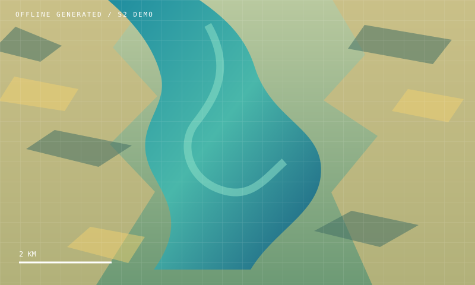

COMMUNITY WATER WATCH / 22 SEP 2026
Demo Lake at a glance
Source offline satellite scene
!
Water watch: high concern
A high harmful-algal-bloom screening signal was detected for Demo Lake. Do not swim, drink untreated water, or harvest food from the affected water.
01 / SCENE PREVIEW
Latest satellite view

DEMO SCENE / RGB + NIR02 / INTERPRETATION
What the signal means
High harmful-algal-bloom screening signal for Demo Lake community.
KNOWN LIMITATIONS
Reflectance proxies are not lab measurements. Thresholds need field validation.
↗
RECOMMENDED NEXT STEP
Keep people and animals away
Contact the local health or water authority for confirmation.
SPECTRAL EVIDENCE
Water signal, unpacked
The offline scene carries the same analysis output used by the API contract. Values remain labeled as screening proxies.
Band / measureReadingSignal
B02 - blue water response0.30 mean
B03 - green water response66.50 ug/L
B04 - red bloom response1.00 signal
B05 - red-edge spike1.00 signal
DOCUMENTED API / POST /NETWORK/ANALYZE
Network alert propagation
Preview how a verified unsafe node could affect downstream water points. This panel is separate from the existing analysis UI.
NETWORK DEMO
Lake Malawi basin - drinking-water route
∿
Ready when you are
Press the DEMO button to build and analyze the sample network.
Source inline demo recordsUncertainty FIELD SAMPLE REQUIREDRetry enabled for live API
The demo never edits backend state.
ONE HEALTH LINKAGE
Water signal → human action
Community reports connect environmental screening to public-health context without replacing laboratory confirmation.
2 total cases across the linked Demo Lake catchment.
Cholera
Report HL-001 - 2 cases - Demo Lake community
Confirm before escalation
Use local clinical and water-authority channels for confirmation and community messaging.